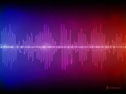

Sound

Sound is made up of waves.
Sound is produced due to the vibration of objects.
It requires a medium to propogate.
It cannot travel in vacuum.
The number of times an object vibrates in a second is called frequency.
Audible range of frequency for humans is 20Hz-20000Hz.
Sound with frequency below 20Hz is called infra-sound.
Sound with frequency above 20000Hz is called ultra-sound.
Loudness is a characteristic property of sound.
It is measured in decibels (dB).